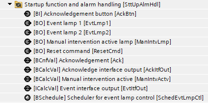
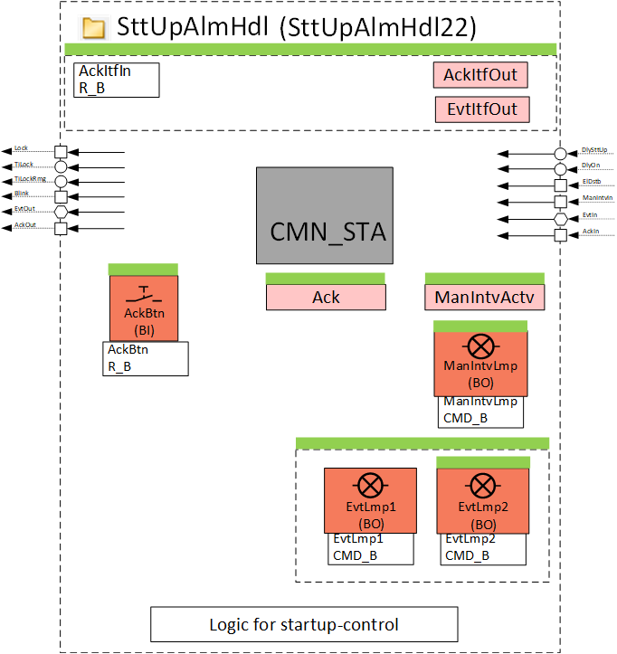
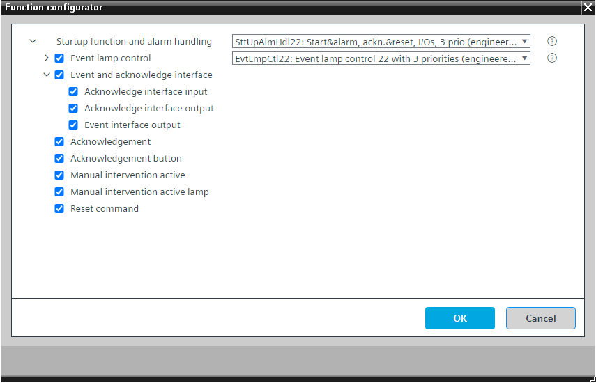
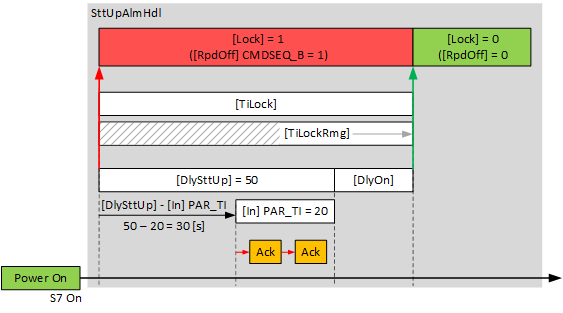
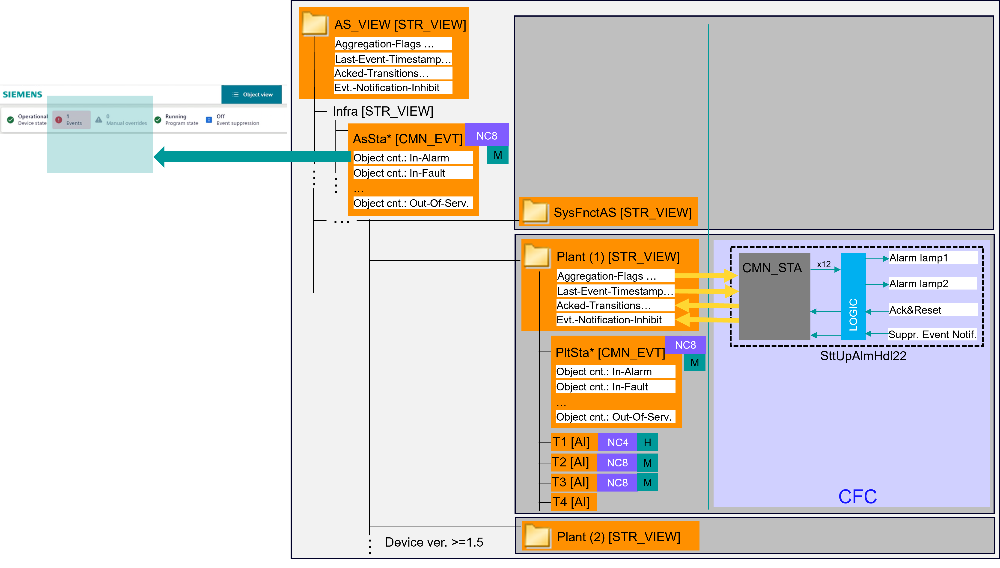
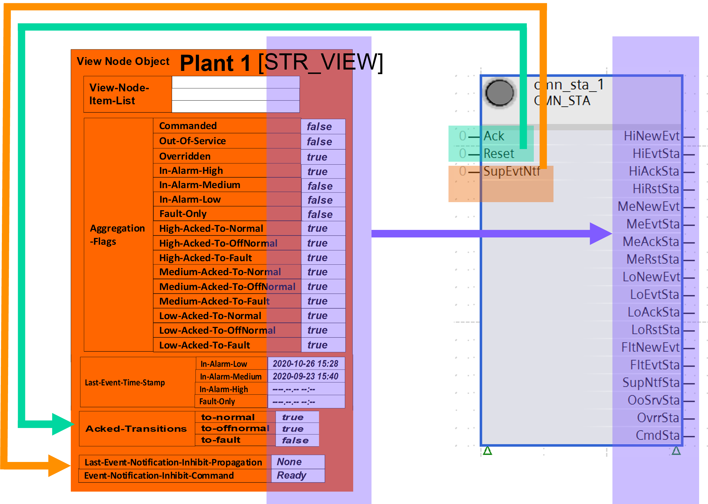
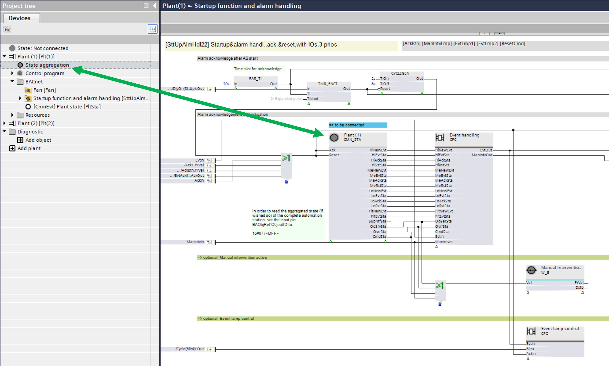
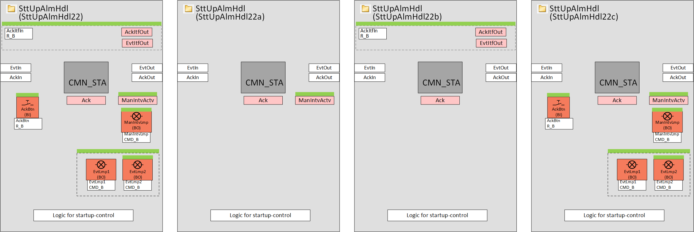
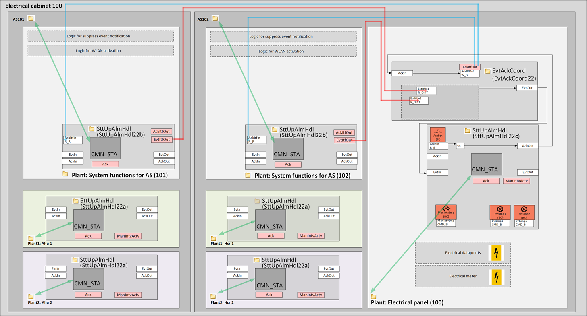

[SttUpAlmHdl22] 启动和警报处理、确认和重置、I/Os、3 个优先级
Program block, name / node subtype: [SttUpAlmHdl22] Startup & alarm handling, acknowledge & reset, I/Os, 3 priorities
Library hierarchy: Universal equipment
Family: SttUpAlmHdl
项目树 | 图表 |
|---|---|
|
 |  |
Configurator


程序块存储在没有 I/Os. 的库中 使用auto-create and auto-connect函数创建 I/Os 和 /or 将它们连接到接口块，例如 R_A、CMD_B。或者，从包含库中预定义 I/Os 的文件夹中取出 I/Os，并从工厂中取出 /or，并将它们连接到接口块。
控制设备上电后的启动行为。
启动后有大约 50 秒的延迟“DlySttUp”。不要更改此延迟。将延迟“DlyOn”更改为每个工厂不同的延迟。这可确保工厂相继启动，并且不会使电气系统过载。
读取工厂所有故障和警报的汇总并为程序进行解释。
Startup behavior
以下功能可用于设备的自动启动，例如在断电和随后恢复供电后：
- Fixed switch-on times. These can be set on input [DlySttUp]. The output [Lock] is "True" and the plant remains switched off. The plant remains off to ensure that communications are reliable and cross-check references are triggered.
- Automatic acknowledge (2x) of possible pending alarms during a fixed switch-on delay.
- Additional adjustable delay for staged plant ramp-up. This can be set on input pin [DlyOn].
- Output [TiLock] displays the entire period of the delay, i.e., [DlySttUp] + [DlyOn].
- Output [TiLockRmg] displays the remaining time until the output [Lock] is set to "False".

Collection and aggregation of all faults and alarms from the plant
对于设备版本 1.5 或更高版本，每个“结构化视图”类型的 BACnet 对象（例如植物）都具有新属性：
- Aggregation Flags
- Last-Event-Timestamp
- Acknowledged Transitions
- Event-Notification-Inhibit-Command
所有警报、故障和手动干预（停止服务、覆盖、命令）都会在这些新属性中收集和显示。考虑通知类对象的过滤级别信息，并在相应过滤级别（高、中或低）的“聚合标志”中按组显示警报和故障。
SttUpAlmHdl22 包含一个功能块 CMN_STA，它连接到结构化视图对象（很可能是一个工厂）并读取“聚合标志”和“最后事件时间戳”以表示其输出处的警报、故障和手动干预的数量，并写入“已确认的转换”和“事件通知禁止命令”以确认（并重置）属于该结构化视图的警报和故障或抑制属于该结构化视图的对象的事件通知。
原则：

Key
NCx | 通知类 |
H | 过滤级别：高 |
M | 过滤级别：中 |
结构化视图对象的属性以及 CMN_STA 的输入和输出的详细信息：

结构化视图对象与 CMN_STA 之间的连接：

“状态聚合”节点表示结构化视图对象“Plant(1)”。您可以将该节点拖到 CMN_STA 上。当“Plant(1)”连接到 CMN_STA 时，节点的颜色从白色变为灰色。
该程序块具有以下可选功能：
Option: Event lamp control (2xBO)
控制一或两个警报灯 (EvtLmpCtl22)。灯的行为（闪烁、稳定或关闭）提供有关聚合警报和故障及其状态的信息。
Option: Event and acknowledge interface
以双整数值对象的形式提供有关聚合警报、故障、手动干预及其状态的信息。该值表示 CMN_STA 输出引脚的 0 或 1 状态，转换为双整数值。
它可以接收和发送确认信号。
Option: Acknowledgement
用于确认属于该结构化视图的所有对象的软件按钮。
Option: Acknowledgement button (1xBI)
1 - 调整建筑模型参数。
Option: Manual intervention active
解释 CMN_STA 的一些引脚，并在对属于该结构化视图的一个或多个对象进行手动干预（停止服务、覆盖或命令）时生成警报。
Option: Manual intervention active lamp (1xBO)
如果对属于该结构化视图的一个或多个对象进行手动干预（停止服务、被覆盖或受命令），则打开一盏灯，例如橙色灯。
Option: Reset command (1xBO)
打开二进制输出以进行硬件复位。
SttUpAlmHdl22 and its subsets
SttUpAlmHdl22 未在库中的任何基本解决方案中使用。 SttUpAlmHdl22 具有三个针对不同用途进行优化的程序块子集。
如果您需要扩展一个子集，例如设备自己的确认按钮和报警灯，请使用“功能配置器”选择 SttUpAlmHdl22 并将其配置为所需的功能。
下图显示了 SttUpAlmHdl22 及其子集：SttUpAlmHdl22a、SttUpAlmHdl22b、SttUpAlmHdl22c。

SttUpAlmHdl22a 经过优化，可用于plants.
SttUpAlmHdl22b 针对在工厂中的使用进行了优化SysFnctAS21x.
SttUpAlmHdl22c 针对在工厂中的使用进行了优化ElPnl21x.
Example of an electrical cabinet with two automation stations
事件通过工厂 SysFnctAs21x 中的 SttUpAlmHdl22b（CMN_STA 连接到 AS_VIEW）在设备级别收集，并转发（通过 EvtItfOut）到工厂 ElPnl21x 中的 EvtAckCoord22。从那里，它们被转移到包含灯的SttUpAlmHdl22c。
SttUpAlmHdl22c 中的确认按钮被传输到 EvtAckCoord22 中的 AckItfOut，并从那里由工厂 SysFnctAS21x 中 SttUpAlmHdl22b 中的 AckItfIn 读取，并通过 CMN_STA 传输到 AS_VIEW。

姓名 | 描述 | 类型 | 报警/通知类 | 趋势/类型 | |
|---|---|---|---|---|---|
EvtLmpCtl | Event lamp control | N/A | N/A | ||
Ack | Acknowledgement | BCnfVal: Binary configuration value | No | No | |
AckBtn | Acknowledgement button | BI：二进制输入 | No | 是的，4 | |
ResetCmd | Reset command | BO：二进制输出 | No | 是的，4 | |
ManIntvActv | Manual intervention active | BCalcVal: Binary calculated value | 是的，8 | No | |
ManIntvLmp | Manual intervention active lamp | BO：二进制输出 | No | No | |
描述 |
|---|
|
Event and acknowledge interface 属于该选项的元素： Acknowledge interface input EvtItfOut | Event interface output | ICalcVal: Integer calculated value AckItfOut | Acknowledge interface output | BCalcVal: Binary calculated value |